측량및지형공간정보기사 (2011-03-20 기출문제)
1과목: 측지학 및 위성측위시스템
1. 우리나라가 속해 있는 UTM 좌표구역 52S 에서 좌표 원점의 위치는?
- 동경 125° 와 적도
- 동경 127° 와 적도
- 동경 129° 와 적도
- 동경 132° 와 적도
(정답률: 92%)

2. 중력이상(重力異常)에 대한 설명으로 옳지 않은 것은?
- 일반적으로 실측값과 계산식에 의한 이론적 중력값은 일치하지 않는다.
- 중력이상이 (+) 이면 그 지점 부근에 무거운 물질이 있다.
- 중력이상에 의한 계산값에서 실측값을 뺀 것이 중력이상의 값이다.
- 중력이상에 의해 지표면 아래의 상태를 추정할 수 있다.
(정답률: 45%)
3. GPS 위성의 궤도상 좌표를 결정할 수 있는 제원으로 관계가 먼 것은?
- 알마낙(Almanac)
- 방송궤도력(Broadcast ephemerides)
- IGS의 SP3
- IONEX(The IONosphere map EXchange) 정보
(정답률: 83%)
4. 기준국과 이동국간의 거리가 짧을 경우 상대측위를 수행하면 절대측위에 비해 정확도가 현격히 향상되게 되는데 그 이유로 거리가 먼 것은?
- 위성궤도오차가 제거된다.
- 다중경로오차(multipath)를 완전히 제거할 수 있다.
- 전리층에 의한 신호의 전파지연이 보정된다.
- 위성시계오차가 제거된다.
(정답률: 97%)
5. GPS에서는 어떻게 위성과 수신기 사이의 거리를 측정하는가?
- 신호의 전달시간을 관측
- 신호의 형태를 관측
- 신호의 세기를 관측
- 신호대 잡음비를 관측
(정답률: 91%)
6. GPS의 정확도가 1ppm이라면 기선의 길이가 10kg 일때 GPS를 이용하여 어느 정도로 정확하게 위치를 알아낼 수 있다는 것을 의미하는가?
- 1km
- 1m
- 1cm
- 1mm
(정답률: 88%)
7. 지진파의 종류가 아닌 것은?
- S파
- L파
- γ파
- P파
(정답률: 80%)
8. 측지원점을 정의하기 위해 필요한 요소로 거리가 먼 것은?
- 표준중력
- 타원체의 장반경
- 원방위각
- 원점의 경도
(정답률: 80%)
9. 천문좌표계에 속하지 않는 것은?
- 지평좌표
- 적도좌표
- 경위도좌표
- 황도좌표
(정답률: 80%)
10. GPS의 활용분야와 가장 관계가 먼 것은?
- 측지 측량기준망의 설정
- 지각변동 관측
- 지형공간정보 획득 및 시설물 유지관리
- 실내 건축인테리어
(정답률: 96%)
11. 관측점들의 고도차에 존재하는 물질의 인력이 중력에 미치는 영향을 보정하는 중력보정을 무엇이라 하는가?
- 지형보정
- 부게보정
- 기계보정
- 프리-에어 보정
(정답률: 79%)
12. 거리 측정의 정밀도를 1/107까지 허용한다면 지구의 표면을 평면으로 생각할 수 있는 측정거리의 한계는? (단, 지구의 곡률반경은 6,370km로 한다.)
- 약 7km
- 약 11km
- 약 22km
- 약 35km
(정답률: 80%)
13. 지오이드에 대한 설명으로 옳지 않은 것은?
- 지오이드는 중력으로부터 결정될 수 있다.
- 지오이드는 표고의 기중이 된다.
- 지오이드의 위치에너지는 0 이다.
- 지오이드는 타원 법선에 직교한다.
(정답률: 50%)
14. 위성의 기하학적 분포상태는 의사거리에 의한 단독측위의 선형화된 관측방정식을 구성하고 정규방정식의 역행렬을 활용하면 판단할 수 있다. 관측점 좌표 x,y,z및 수신기 시계 t에 대한 Cofactor 행렬(Q)의 대각선요소가 각각 qxx=0.5, qyy=2.2, qzz=2.5, qtt=1.2일때 관측점에서의 GDOP는?
- 3.575
- 3.609
- 6.500
- 13.030
(정답률: 57%)
15. 위성의 고도가 낮아지면서 증대되는 오차는?
- Anti-Spoofing
- Selective Availability
- 시계오차
- 대기오차
(정답률: 89%)
16. 지자기측량에 대한 설명 중 옳지 않은 것은?
- 지자기의 방향과 자오선과의 각은 편각이다.
- 지자기의 방향과 수평면과의 각은 복각이다.
- 수평면내에서 자기장의 크기는 수평분력이다.
- 지자기는 그 크기만으로 정하여 진다.
(정답률: 50%)
17. 지표면상의 구면 삼각형 ABC의 3개의 각을 관측한 결과 ∠A=51˚30´, ∠B=65˚45´, ∠C=63˚35´이었다면 구면 삼각형의 면적은? (단, 지구반경 R=6370km 이며, 측각오차는 없는 것으로 간주한다.)
- 549836.1 km2
- 590166.5 km2
- 642342.4 km2
- 718633.4 km2
(정답률: 85%)
18. 지구와 공전에 의한 현상과 거리가 먼 것은?
- 1항성일과 1태양일이 다르다.
- 1항성월과 1삭망월이 다르다.
- 천구의 일주운동이 발생한다.
- 태양의 적경이 매일 변한다.
(정답률: 72%)
19. 다음 중 균시차를 바르게 표현한 것은?
- 항성시-평균태양시
- 평균 태양시-항성시
- 시 태양시-평균 태양시
- 시 태양시-항성시
(정답률: 89%)
20. GPS(Global Positioning System)에 관한 설명으로 옳은 것은?
- GPS의 위치결정법에는 방송파 위상관측법만이 있다.
- L1파는 P 코드만을 변조한다.
- GPS의 구성은 우주부문,제어부문,사용자부문으로 나뉜다.
- L2파는 P 코드와 C/A 코드를 변조한다.
(정답률: 66%)
2과목: 응용측량
21. 터널 내의 A, B점의 좌표(x, y, z)가. A(1328, 810, 86.3), B(1734, 589, 112.4)일 때, 이 터널의 굴착 경사각은? (단, 좌표의 단위는 m 이다.)
- 1° 00′ 00″
- 3° 13′ 54″
- 3° 14′ 12″
- 3° 54′ 38″
(정답률: 66%)
22. 지적측량의 순서로 옳은 것은?
- 계획수립 - 선점 및 조표 - 준비 및 현지답사 - 성과표 작성 - 관측 및 계산
- 준비 및 현지답사 - 계획수립 - 선점 및 조표 - 성과표 작성 - 관측 및 계산
- 준비 및 현지답사 - 선점 및 조표 - 계획수립 - 관측 및 계산 - 성과표 작성
- 계획수립 - 준비 및 현지답사 - 선점 및 조표 - 관측 및 계산 - 성과표 작성
(정답률: 68%)
23. 원곡선 설치에 있어서 곡선 반지름 R=250m, 교각 I=130° 일 때, 중앙종거(M)와 곡선길이(C, L)는?
- M=144.35m, C,L=567.23m
- M=144.35m, C,L=570.25m
- M=143.55m, C,L=570.25m
- M=143.55m, C,L=567.23m
(정답률: 64%)
24. 어떤 횡단면도의 도상면적이 29.8cm2 이다. 가로와 세로의 축척이 각각 1/50, 1/10 이라면 면적은 얼마인가?
- 1.49m2
- 2.98m2
- 7.45m2
- 3.68m2
(정답률: 46%)
25. 그림과 같은 종단곡선을 2차 포물선으로 설치하고 자 할 때, B점의 계획고는? (단, A점의 계획고는 78.63m 이다.)
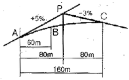
- 81.63m
- 80.73m
- 79.33m
- 78,23m
(정답률: 57%)
26. 어떤 하천에서 직선BC에 따라 그림과 같이 심천측량을 실시할 때 P점에서 관측장비를 이용하여 ∠APB를 관측하여 39°20′을 얻었다 BP의 거리는? (단, AB=73m)
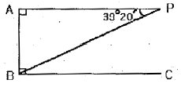
- 96.30m
- 115.17m
- 125.13m
- 155.80m
(정답률: 67%)
27. 수심이 H인 하천에서 수면으로부터 0.2H, 0.4H, 0.6H, 0.8H 되는 지점의 관측 유속(m/sec)이 0.57, 0.55, 0.50, 0.49 이었다. 4점법의 평균 유속공식에 의한 평균유속은?
- 0.532 m/sec
- 0.527 m/sec
- 0.504 m/sec
- 0.497 m/sec
(정답률: 38%)
28. 원곡선의 반지름이 100m일 때 중심말뚝간격 20m에 대한 현의 길이와 호의 길이의 차는?
- 3.3cm
- 5.5cm
- 6.7cm
- 9.2cm
(정답률: 35%)
29. 댐 측량에서 조사계획측량에 해당되지 않은 것은?
- 보상 조사 측량
- 절대 변위 측량
- 수문 자료 수집 측량
- 지형 및 지질조사 측량
(정답률: 63%)
30. 터널측량의 일반적인 작업공정 순서로 옳은 것은?
- 지형측량 - 터널 외 기준점 측량 - 세부측량 - 터널 내 측량 - 준공측량
- 세부측량 - 터널 외 기준점 측량 - 터널 내 측량 - 지형측량 - 준공측량
- 지형측량 - 세부측량 - 터널 외 기준점 측량 - 터널 내 측량 - 준공측량
- 세부측량 - 터널 내 측량 - 지형측량 - 준공측량 - 터널 외 기준점 측량
(정답률: 74%)
31. 터널 내 측량의 특징에 관한 설명 중 옳지 않은 것은?
- 습기, 먼지, 소음, 어두움 등으로 측량조건이 매우 불량하다.
- 폐합트래버스에 의한 측량이 주로 이루어지므로 누적발생오차를 쉽게 확인할 수 있다.
- 굴착면의 변위발생으로 설치한 기준점의 변형이 일어나기 쉽다.
- 후시의 경우 거리가 짧고 예각 발생의 경우가 많아 오차가 자주 발생할 수 있다.
(정답률: 41%)
32. 그림과 같이 사각형 격자의 교점에 대한 각각의 절토고를 얻었다. 절토량은 얼마인가? (단, 격자의 크기는 가로 10m, 세로 20m이다.)
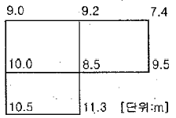
- 1,357m3
- 2,424m3
- 5,580m3
- 6,530m3
(정답률: 67%)
33. 원곡선을 편각법으로 설치할 때, 교각 I=44°, 곡선장(C, L)이 120m 인 경우, 30m에 대한 편각은?
- 3° 40′
- 5° 30′
- 6° 30′
- 7° 9′
(정답률: 50%)
34. 수심측량에서 측량선의 평면위치 결정방법이 아닌 것은?
- 기선과 유도측선에 의한 방법
- 초음파에 의한 방법
- 육분의에 의한 방법
- 전자파 또는 GPS에 의한 방법
(정답률: 38%)
35. 회전식유속계로 유속을 측정할 때 V=aN+b(m/sec)로 표시된다. 이 식에서 N은? (단, a, b는 정수이다.)
- 유속계의 관측 회수
- 유속계의 10회전에 소요되는 시간(sec)
- 유속계의 1초에 대한 회전수
- 유속계의 1회전에 소요되는 시간(sec)
(정답률: 50%)
36. 수평거리를 동일한 정확도로 관측하여 1,000m2의 면적에 대한 면적산정 오차가 0.1m2 이내에 들게 하려면 거리관측의 허용정확도는?
- 1/5,000
- 1/10,000
- 1/20,000
- 1/25,000
(정답률: 31%)
37. 클로소이드 곡선에 대한 설명으로 틀린 것은?
- 곡선길이가 커지면 이정량(shift)도 커진다.
- 곡선길이에 비례하여 곡선반지름이 감소한다.
- 곡선길이에 비례하여 캔트(cant)가 감소한다.
- 접선각(τ)이 일정한 경우 곡선 반지름(R)을 크게하기 위해서는 큰 파라미터(A)를 사용한다.
(정답률: 47%)
38. 곡선반지름이 200m인 원곡선을 설치하고자 한다. 도로의 시점에서 교점까지의 거리는 324.5m 이며 교점부근에 장애물이 있어 아래 그림과 같이 점 A, B에서 의 각을 관측하였을 때, 도로시점으로부터 원곡선 시점까지의 거리는?
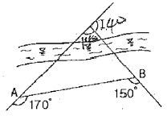
- 184.3m
- 251.7m
- 157.9m
- 286.4m
(정답률: 42%)
39. 노선측량의 작업순서로 옳은 것은?
- 계획조사측량 - 노선선정 - 실시설계측량 - 용지측량 - 세부측량 - 공사측량
- 노선선정 - 계획조사측량 - 용지측량 - 세부측량 - 실시설계측량 - 공사측량
- 계획조사측량 - 용지측량 - 노선선정 - 실시설계측량 - 세부측량 - 공사측량
- 노선선정 - 계획조사측량 - 실시설계측량 - 세부측량 - 용지측량 - 공사측량
(정답률: 55%)
40. 하천 측량에서 평면측량의 일반적인 범위는?
- 유제부에서 제내지 및 제외지 300m이내, 무제부에서는 홍수가 영향을 주는 구역보다 약각 넓게 한다.
- 유제부에서 제내지 및 제외지 200m이내, 무제부에서는 홍수가 영향을 주는 구역보다 약간 좁게 한다.
- 유제부에서 제내지 및 제외지 200m이내, 무제부에서는 홍수가 영향을 주는 구역보다 약간 넓게 한다.
- 유제부에서 제내지 및 제외지 300m이내, 무제부에서는 홍수가 영향을 주는 구역보다 약간 좁게 한다.
(정답률: 70%)
3과목: 사진측량 및 원격탐사
41. 항공사진에 대한 설명으로 틀린 것은?
- 항공사진으로 지도를 만들 수 없다.
- 항공사진은 지면에 비고가 있으면 그 상은 변형되어 찍힌다.
- 항공사진은 지면에 비고가 있으면 연직사진이어도 렌즈의 중심과 지상점의 높이의 차가 다르고 축척은 변화 한다.
- 항공사진은 경사져 있으면 지면이 평탄하더라도 사진의 경사의 방향에 따라 한쪽은 크고 다른 쪽은 작게 되어 축척은 일정하지 않다.
(정답률: 84%)
42. 다중분광 스캐너 중 Pushbroom 스캐너에 대한 설명으로 옳은 것은?
- 위성경로에 직각방향으로 빗자루로 쓸듯이 관측하는 스캐너
- 센서가 감지하는 분광범위가 가시광선에서 열적외선에 이르는 스캐너
- 회전하는 거울과 고체형 탐지기를 결합하여 지표면을 관측하는 스캐너
- 선형으로 배열된 전하결합소자(CCDs)를 이용하여 한 번에 한 라인 전체를 기록하는 스캐너
(정답률: 54%)
43. 항공사진 판독에 있어서 주요 요소가 아닌 것은?
- 모양(模樣)
- 색조(色調)
- 음영(陰影)
- 표정점 배치(配置)
(정답률: 58%)
44. 다음 중 GIS 자료출력용 하드웨어가 아닌 것은?
- 모니터
- 플로터
- 프린터
- 디지타이저
(정답률: 83%)
45. 동서 30km, 남북 20km인 사각형의 촬영지역을 횡중복도 30%, 종중복도 60%로 촬영하였다. 이 작업에 필요한 삼각점의 수는 최소 몇 점이 있어야 하는가? (단, 사진의 크기 23cm × 23cm, 초점거리 150mm, 촬영고도 3,000m 이고 엄밀법으로 계산하고 촬영은 동서방향으로 한다.)
- 158점
- 199점
- 238점
- 279점
(정답률: 62%)
46. 사진측량의 표정 중에서 촬영당시와 똑같은 상태로 피사체에 관한 사진을 재현시키는 작업은?
- 내부표정
- 상호표정
- 접합표정
- 절대표정
(정답률: 72%)
47. 항공사진을 입체시할 경우 과고감 발생에 영향을 주는 요소와 거리가 먼 것은?
- 사진의 명암과 그림자
- 촬영고도와 기선길이
- 중복도
- 사진기의 초점거리
(정답률: 85%)
48. 평탄지를 축척 1:20000로 촬영한 연직사진이 있다. 촬영에 사용한 카메라의 초점거리가 15cm, 사진의 크기가 23cm × 23cm, 종중복도 60%일 때 기선고도비는?
- 0.51
- 0.61
- 0.71
- 0.81
(정답률: 77%)
49. 항공삼각측량에서 조정방법에 따라 정확도가 높은 것부터, 낮은 순서로 나열된 것은?
- 기계법 - 도해법 - 해석적 방법
- 도해법 - 기계법 - 해석적 방법
- 해석적 방법 - 도해법 - 기계법
- 해석적 방법 - 기계법 - 도해법
(정답률: 64%)
50. 자료교환을 위한 표준화의 형식에 대한 설명으로 틀린 것은?
- SDTS : 미국의 국가 공간 정보 표준 포맷
- DXF : AutoCAD의 제작자에 의해 제안된 자료교환 형식
- NTF : 영국의 국가적인 교환형식
- DLG : 독일의 수치지형표준자료에 의한 전국적 지도제작 포맷
(정답률: 62%)
51. 지리정보시스템의 자료구조 중 자료를 부호화하는 데 있어서 간단한 자료구조를 가지고 있고 중첩에 대한 조작이 용이하여 매우 효과적인 것은?
- 외부 데이터
- 래스터 데이터
- 내부 데이터
- 벡터 데이터
(정답률: 50%)
52. 지리적 현상의 종류 중 지리적 객체(Geographic Object)에 관한 설명으로 틀린 것은?
- 일반적으로 점, 선, 면 등으로 구분된다.
- 지리적 현상 중에서 명확한 경계가 존재하는 것을 말한다.
- 모든 위치에 값이 존재하는 지리적 현상이다.
- 위치와 형태, 크기, 방향 등이 존재한다.
(정답률: 27%)
53. 수치표고모형(DEM)으로부터 얻을 수 있는 자료들로만 짝지어진 것은?
- 사면방향도, 경사도에 대한 분석도
- 수계도, 토지피복도
- 가시권에 대한 분석도, 도로망도
- 표고분석도, 역세권 분석도
(정답률: 83%)
54. GIS를 구축하고 활용하기 위한 기본적인 구성요소를 세가지로 구분할 때 거리가 먼 것은?
- 공간분석기술
- 공간데이터베이스
- 소프트웨어
- 하드웨어
(정답률: 46%)
55. GIS 자료에 대한 검수방법의 설명으로 옳지 않은 것은?
- 전수검사는 검수 대상 자료 전부를 검사하여 관심 항목의 사항들을 만족하는 것을 합격품으로 하는 것이다.
- 표본검사는 성과물에서 일정비율로 대상물을 추출하여 불량품의 비율을 측정하는 검사방법이다.
- 표본검사 중 1단 완전추출법은 납품된 지도에서 10% 정도를 임의로 추출하여 전수검사를 하는 방법이다.
- 표본검사 중 2단 집락추출법은 납품한 전체의 지도 중에서 1단계로 10%정도의 도엽을 추출하고 2단계로 추출된 지도 중 몇 군데의 구역을 표본 추출하여 추출된 구역 내의 내용물에 대하여 전수검사를 하는방법이다.
(정답률: 54%)
56. 축척이 1:25000 인 항공사진에서의 허용 흔들림이 0.01mm이고 최장 노출시간이 1/200 초일 때 항공기의 속도는?
- 80km/h
- 90km/h
- 180km/h
- 190km/h
(정답률: 68%)
57. 초점거리 150mm 카메라로 평지를 축척 1:20000로 촬영한 연직사진의 주점으로부터의 거리가 60mm, 평지로부터 비고가 250m인 지역의 비고에 의한 변위량은?
- 2.5mm
- 5.0mm
- 7.5mm
- 10.0mm
(정답률: 49%)
58. Buffer에 관한 설명으로 옳은 것은?
- 벡터자료의 면(polygon)자료에만 적용할 수 있다.
- buffer 결과물은 언제나 면(polygon)자료이다.
- 모든 buffer는 언제나 대상물로부터 일정한 거리만을 갖는다.
- buffer는 언제나 두 개 이상의 layer가 필요하다.
(정답률: 44%)
59. 다음 중 GIS의 관망 분석 기능을 이용하는 경우로 거리가 먼 것은?
- 최단 거리 탐색
- 교통 소음 영향권 평가
- 버스의 운행 경로 선정
- 하천의 유량 예측
(정답률: 70%)
60. 다음 중 지리정보와 거리가 먼 것은?
- 지역별 연평균 강우량 정보
- 행정구역별 인구밀도 정보
- 직업군별 평균소득 정보
- 대상지역의 경사도분포 정보
(정답률: 78%)
4과목: 지리정보시스템
61. B점에서 편심관측을 아래 그림과 같이 행하였다. ∠r1, ∠r2 는 얼마인가? (단, B : 기지점, S1=2000m, S2=1000m, e=0.1m, T'=120°, ρ=330°이다.)
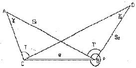
- γ1=3″, γ2=6″
- γ1=5″, γ2=10″
- γ1=10″, γ2=20″
- γ1=15″, γ2=30″
(정답률: 60%)
62. 어느 지역의 폐합트래버스 측량에 있어서 아래와 같은 측량결과를 얻었을 때 측선 CD의 배횡거는 얼마인가?
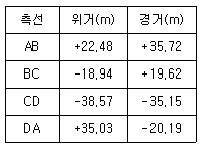
- 58.88m
- 75.53m
- 77.82m
- 97.45m
(정답률: 66%)
63. 다음 삼각망에서 조건식의 총수는 얼마인가?
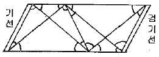
- 10
- 9
- 8
- 7
(정답률: 57%)
64. 우리나라 2등 수준측량의 왕복관측 값의 허용 교차는 얼마인가? (단, L은 km단위의 편도 거리이다.)
- 2.5√Lmm
- 5.0√mm
- 10.0√Lmm
- 20.0√Lmm
(정답률: 48%)
65. 축척 1/500 지형도를 기초로 하여 축척 1/3000의 지형도를 제작하고자 한다. 1/3000 지형도 1도엽은 1/500 지형도를 몇 매 포함한 것인가?
- 45매
- 40매
- 36매
- 25매
(정답률: 61%)
66. 보정전자파 에너지의 속도가 299712.9 km/sec, 변조주파수가 24.5 MHz일 때 광파거리 측량기의 변조파장은?
- 8.17449m
- 12.23318m
- 16.344898m
- 24.46636m
(정답률: 85%)
67. 직육면체인 저수탱크의 용적을 구하고자 한다. 밑변 a, b와 높이 h에 대한 측정결과가 다음과 같을 때 부피오차는?
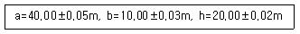
- ±10m3
- ±21m3
- ±27m3
- ±34m3
(정답률: 64%)
68. 한 개의 각을 10회 측정하여 표와 같이 오차가 발생하였다. 평균 제곱근 오차(표준편차)는?
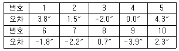
- 1.75″
- 2.75″
- 3.75″
- 4.75″
(정답률: 50%)
69. 그림과 같은 △ABC에서 AB측선의 방위각이 25˚21′ 42″ 일 때 CA측선의 방위각은? (단, ∠A=70˚ 12′ 25″, ∠B=67˚ 37′ 20″, ∠C=42˚ 10′ 15″)
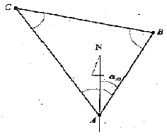
- 154˚ 38′ 18″
- 137˚ 49′ 45″
- 135˚ 09′ 17″
- 272˚ 59′ 02″
(정답률: 36%)
70. 빗변에서 거리를 관측할 때 경사에 의한 오차를 1/1,000까지 허용한다면, 경사각(α)은 몇 도까지 허용되는가? (단,
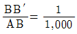
m)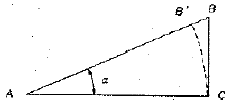
- 34′
- 1° 34 ′ 40″
- 2° 33 ′ 42″
- 3° 34 ′ 42″
(정답률: 58%)
71. 축척 1/5000 지형도에서 위치의 오차가 도상 0.5mm 이고, 높이의 오차가 1.0m인 경우 토지의 경사가 25° 인 곳의 최대 표고 오차는 얼마인가?
- 1.54m
- 2.07m
- 2.17m
- 3.01m
(정답률: 58%)
72. 삼각측량에서 1,2,3,4등 삼각점 또는 기설의 기준삼각점으로부터 실시한 기준삼각측량의 기준삼각점간 거리는 약 얼마 정도를 표준으로 하는가?
- 10km
- 1.5km
- 500m
- 200m
(정답률: 41%)
73. 최소제곱법에 의한 관측값 조정에 대한 설명으로 옳지 않은 것은?
- 같은 정밀도로 관측된 관측값에서 잔차제곱의 합이 최소일 때 최확값이 된다.
- 오차의 반도분포는 정규분포로 가정한다.
- 관측값에는 과대오차 및 정오차는 모두 제거되고 우연오차만이 측정값에 남아 있는 것으로 가정한다.
- 서로 다른 경중률로 관측된 관측값은 최소제곱법을 사용할 수 없다.
(정답률: 41%)
74. 수준측량의 용어에 대한 설명으로 틀린 것은?
- 우리나라에서 기준면으로 사용하는 평균해수면은 남한 전체 해수면 높이를 평균한 값을 사용한다.
- 기준면으로부터의 연직거리를 표고라 한다.
- 수준면은 정지된 해수면을 육지까지 연장하여 얻은 곡면으로 위치에너지가 0인 지오이드면과 동일하다.
- 수준노선이 서로 연결되어 하나의 다각형 또는 원으로 폐합된 것을 수준환이라 한다.
(정답률: 45%)
75. 전자파 거리측량기의 위상차 관측방법이 아닌 것은?
- 위상지연방법
- 위상변위방법
- 진폭변조방법
- 디지털 측정법
(정답률: 60%)
76. 점 A, B가 동경사에 위치할 때 도상길이는 68.5mm이며 A의 표고는 37.65m, B의 표고는 53.25m, 두 점 사이의
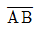
선상의 표고 40.00m 지점의 위치는 A로부터 도상에서 몇mm 떨어진 곳에 위치하는가?- 8.5mm
- 7.8mm
- 10.3mm
- 9.7mm
(정답률: 41%)
77. 삼변측량이 삼각측량 방법을 완전히 대신하기 어려운 이유로 옳은 것은?
- 삼변측량에서 변의 수가 증가함에 따라 많은 양의 보조기선측량이 필요하다.
- 삼변측량에서 삼각형의 변만 관측되면 기하학적 도형조건이 성립하지 않는다.
- 삼변측량에서 삼각측량에 비해 장거리를 관측하기위해서는 관측탑과 같은 복잡한 시설이 필요하다.
- 삼변측량은 관측장비의 정밀도를 확신하기 어렵다.
(정답률: 63%)
78. 삼각망을 구성하는데 있어서 내각을 작게 하는 것이 좋지않은 이유를 가장 잘 설명한 것은?
- 한 삼각형에 있어서 작은 각이 있으면 반드시 다른 각중에서 큰 각이 있기 때문이다.
- 경도, 위도 또는 좌표계산이 불편하기 때문이다.
- 한 가지변으로부터 타변을 sine 법칙으로 구할 때오차가 많이 생기기 때문이다.
- 측각하기가 불편하기 때문이다.
(정답률: 69%)
79. 축적 1/25000인 우리나라 지형도의 한 도엽의 크기(경도 * 위도)는 얼마인가?
- 1.25' × 1.25'
- 2.5' × 2.5'
- 7.5' × 7.5'
- 15.0 × 15.0'
(정답률: 69%)
80. 수준측량에서 전시와 후시의 시준거리를 같게 하여 관측하였을 경우에도 소거되지 않는 오차는?
- 지구곡률에 따른 오차
- 대기굴절에 따른 오차
- 표척눈금 부정확에 의한 오차
- 시준축이 기포관축에 평행하지 않을 때의 오차
(정답률: 39%)
5과목: 측량학
81. 측량기기의 검사주기에 관한 사항으로 틀린 것은?
- 트랜싯(데오드라이트) : 3년
- 레벨 : 3년
- 토털 스테이션 : 3년
- 지피에스(GPS) 수신기 : 2년
(정답률: 74%)
82. 측량ㆍ수로조사 및 지적에 관핞 법률에서 규정하는 수치주제도에 속하지 않는 것은?
- 지하시설물도
- 수치지적도
- 행정구역도
- 토지피복지도
(정답률: 58%)
83. 공공측량의 실시에 대한 설명으로 옳은 것은?
- 기본측량성과만을 기초로 실시한다.
- 기본측량성과나 다른 공공측량성과를 기초로 실시한다.
- 기본측량성과나 일반측량성과를 기초로 실시한다.
- 다른 공공측량성과나 일반측량성과를 기초로 실시한다.
(정답률: 67%)
84. 측량기준점의 구분에 해당되지 않는 점은?
- 국가기준점
- 연안기준점
- 지적기준점
- 공공기준점
(정답률: 50%)
85. 측량기준점표지를 파손하거나 그 효용을 해치는 행위를 한 자에 대한 벌칙 기준은?
- 3년 이하의 징역 또는 3천만원 이하의 벌금
- 2년 이하의 징역 또는 2천만원 이하의 벌금
- 1년 이하의 징역 또는 1천만원 이하의 벌금
- 300만원 이하의 과태료
(정답률: 34%)
86. 측량기기의 성능검사의 기준에 관한 설명으로 옳은 것은?
- 대한지적공사는 성능검사를 위한 적합한 시설과 장비를 갖추고 성능검사대행자가 실시하는 검사를 받아야 한다.
- 국가교정업무 전담기관의 교정을 받은 측량기기로서 국토해양부장관이 성능검사 기준에 적합하다고 인정한 경우는 성능검사를 받은 것으로 본다.
- 측량업자는 2년 이상 경과한 장비에 대하여 국토해양부장관이 실시하는 성능검사를 받아야 한다.
- 측량기기 성늠검사는 측량기기 성능검사대행자와 대한측량협회에서 실시한다.
(정답률: 48%)
87. 측량협회의 설립에 대한 설명으로 잘못된 것은?
- 측량기술자와 측량업자는 측량에 관한 기술의 향상과 측량제도의 건전한 발전을 위하여 측량협회를 설립할 수 있다.
- 측량협회는 법인으로 한다.
- 측량협회는 주된 사무소의 소재지에서 설립동기를 함으로써 성립한다.
- 측량협회의 정관, 설립 인가 및 감독에 관한 사항과 그 밖에 필요한 사항은 국토해양부령으로 정한다.
(정답률: 58%)
88. 측량ㆍ수로조사 및 지적에 관한 법률에서의 측량의 정의로 가장 적합한 것은?
- 공간상의 위치와 지형 및 지명 등 여러 공간정보를 일정한 축척에 따라 기호나 문자 등으로 표시하는것을 말하며, 정보처리시스템을 이용하여 분석, 편집 및 입력ㆍ출력할 수 있도록 수치지형도나 수치주제도를 제작하는 과정이다.
- 해상교통안전, 해양의 보전ㆍ이용ㆍ개발, 해양관 할권의 확보 및 해양재해 예방을 목적으로 하는 수료측량ㆍ해양관측ㆍ항로조사 및 해양지명조사를 말한다.
- 토지를 지적공부에 등록하거나 지적공부에 등록된 경계점을 지상에 복원하기 위하여 필자의 경계 또는 좌표와 면적을 정하는 제반의 작업을 말한다.
- 공간상에 존재하는 일정한 점들의 위치를 측정하고 그 특성을 조사하여 도면 및 수치로 표현하거나 도면상의 위치를 현지에 재현하는 것을 말한다.
(정답률: 12%)
89. 측량없의 등록기준 중 아래의 표와 같은 장비기준을 요구하는 측량업은?
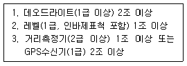
- 측지측량업
- 공공측량업
- 일반측량업
- 공간영상도화업
(정답률: 22%)
90. 측량업자의 지위를 승계하는 자는 그 사유가 발생한 날부터 며칠이내에 국토해양부장관 또는 시ㆍ도지사에게 신고하여야 하는가?
- 30일
- 40일
- 50일
- 60일
(정답률: 72%)
91. 다음 중 측량성과의 고시내용이 아닌 것은?
- 측량의 종류
- 측량의 정확도
- 측량성과의 보관장소
- 측량 작업의 방법
(정답률: 29%)
92. 측량의 실시공고에 대한 사항으로 ( )에 알맞은 것은?
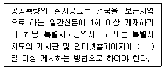
- 7일
- 14일
- 15일
- 30일
(정답률: 34%)
93. 기본측량성과 등을 활용한 지도 등을 간행하여 판매하거나 배포하려는 자는 간행물의 발행에 앞서 원칙적으로 누구의 심사를 받아야 하는가?
- 국토지리정보원장
- 행정안전부장관
- 시ㆍ도지사
- 국토해양부장관
(정답률: 44%)
94. 측량ㆍ수로조사 및 지적에 관한 법률에서 "수로측량" 의 정의로 옳은 것은?
- 국가에 포함되는 해양을 등록 관리하기 위하여 경계 또는 좌표와 면적을 결정하는 측량을 말한다.
- 해상교통안전, 해양의 보전ㆍ이용ㆍ개발, 해양관할권의 확보 및 해양재해 예방을 목적으로 하는 해양관측ㆍ향로조사 등을 말한다.
- 기본측량을 기초로 해양에서 이루어지는 측량을 말한다.
- 해양의 수심ㆍ지구자기ㆍ중력ㆍ지형ㆍ지질의 측량과 해안선 및 이에 딸린 토지의 측량을 말한다.
(정답률: 53%)
95. 1:50,000 지형도의 도엽의 구획으로 옳은 것은?
- 경위도차 1분 30초
- 경위도차 7분 30초
- 경위도차 15분
- 경위도차 30분
(정답률: 47%)
96. 공공측량시행자가 지형지물의 변동사항을 통보하여야 하는 건설공사의 종류 및 규모가 아닌 것은? (단, 각 건설공사의 종류는 각각의 관련법규에 따른 규정을 충족하는 사업이다.)
- 도시개발사업 중 면적이 5만제곱미터 이상인 것
- 산업단지개발 사업 중 면적이 5만제곱미터 이상인 것
- 길이 1킬로미터 이상의 도로건걸 사업
- 하천공사 중 그 공사구간이 하천 중심길이로 1킬로미터 미만인 것
(정답률: 38%)
97. 지도도식규칙에 따라 지도의 외도곽 바깥쪽에 표시되는 것이 아닌 것은?
- 인쇄연도 및 축척
- 행정구역경계
- 도엽명 및 도엽번호
- 편집연도
(정답률: 78%)
98. 기본측량성과나 기본측량기록의 복제나 사본 발급이 제한되는 경우는?
- 개인의 요청에 의해 발급을 제한하는 경우
- 국가안보나 그 밖의 국가의 중대한 이익을 해칠 우려가 있다고 인정되는 경우
- 전산처리에 의해 기록 유지되고 있는 경우
- 공공측량과 일반측량의 성과와 연계되어 있는 경우
(정답률: 64%)
99. 공공측량의 측량성과 또는 측량기록을 복제하거나 그 사본의 교부를 받고자 하는 자는 원칙적으로 어디에 신청을 하는가?
- 공공측량작업기관
- 국토해양부장관이나 공공측량시행자
- 공공측량 성과심사수탁기관
- 시장 또는 군수
(정답률: 70%)
100. 공공측량성과 심사수탁기관은 특별한 사유가 없는 한 성과심사 신청 접수일로부터 며칠이내 심사결과서를 통지해야 하는가?
- 10일 이내
- 15일 이내
- 20일 이내
- 30일 이내
(정답률: 42%)
UTM 좌표계는 원점이 지구의 중심에 위치하고 있지 않습니다. 따라서, UTM 좌표계에서는 각 좌표구역마다 원점이 따로 설정되어 있습니다. UTM 좌표구역 52S의 원점은 동경 120°입니다. 적도는 지구의 중심을 가로지르는 선으로, UTM 좌표계에서는 적도를 0m로 설정합니다. 따라서, UTM 좌표구역 52S의 원점 위치는 "동경 120°와 적도"입니다.